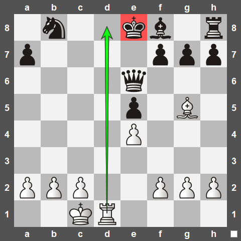
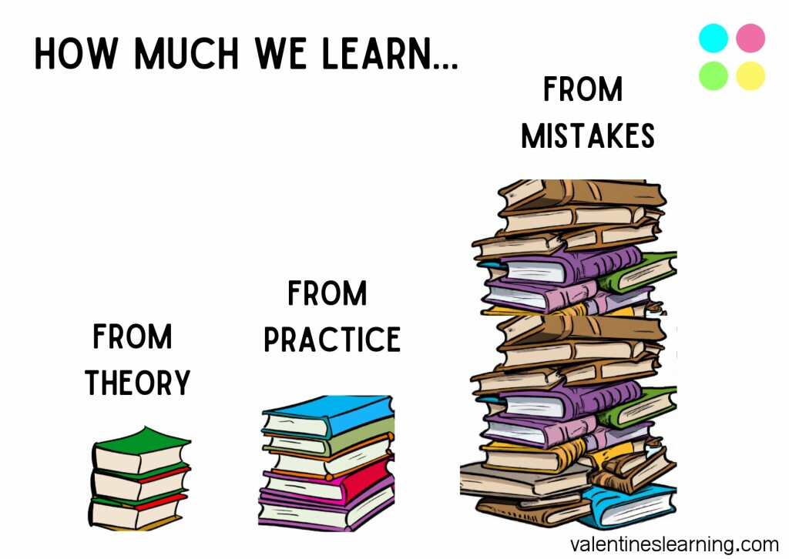

Playing chess is one of my favorite hobbies because it mirrors many real-world challenges. It's
taught me to think strategically and consider the consequences of every step I take. The game is a
great teacher of diligence; it forces you to check your work carefully to avoid a sudden
'checkmate'—a lesson that has saved me from making costly mistakes in my own projects. Above all,
chess has taught me the value of patience when trying to outmaneuver an opponent, which is a skill I
find invaluable in all aspects of life.

